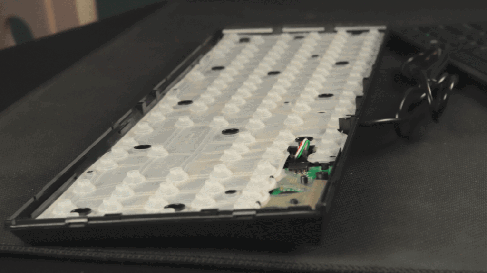
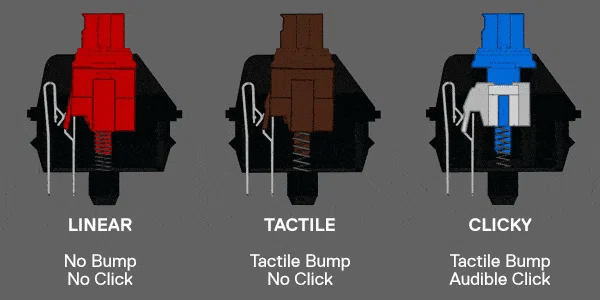

The first typewriter that used the QWERTY layout and was commercially sold was the
Sholes and Glidden typewriter, which was made in 1867. However, before this, there were many typing devices that
were unique in design, but never quite encapsulated the design of the typewriter as we know it today.
The Hansen Writing Ball is an example of one of these devices. It used a dome-like keyboard
which printed onto paper laid on a curved surface. It was invented by Rasmus Mailling-Hansen in 1865.
The first electric typewriter was patented in 1893 by Albert Dick which later
evolved into a more commonly found office writing machine by James Smathers in 1920.
As time went on, a company called IBM developed their own version of the electric typewriter
which was much more refined than its predecessors in 1935.
Today, typewriters aren't very common for practical reasons as the world progressed
technologically towards computers and using the World Wide Web.
It wasn't until the 70s when Personal Computers were made avaliable to the public;
this is when keyboards were needed to conduct use of computers.
Many computers had inbuilt keyboards and were sold as an entire unit.
The most well-known keyboard emerged in 1986, mnown as the IBM Model M keyboard.
Modern Design
Keyboards started evolving as time went on. The Membrane Keyboard was invented in
1965 by George H. Heilmeier, which grew in popularity in the early 80s.

A membrane keyboard works by using a thin membrane made of a material like silicon.
Underneath each keycap is a dome that is collasped upon each press, completing the circuit in the PCB telling the computer
which key has been pressed.

As the popularity of membrane keyboards grew, the decline of mechanical keyboards ensued.
Membrane keyboards were cheaper to make, but were less durable. Mechanical keyboards are more popular these days
among gamers and enthusiasts for multiple reasons.
A new technology for mechanical keyboards was developed by German company, Cherry, allowing the user to custom their
keyboard to their liking, being able to finetune the sound, feeling, and actuation pressure with different switches.